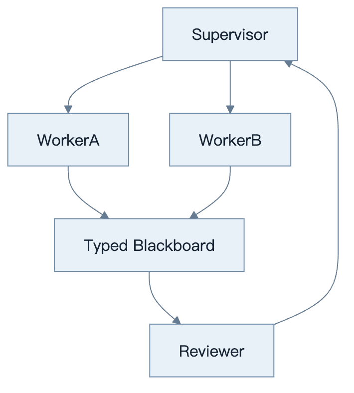
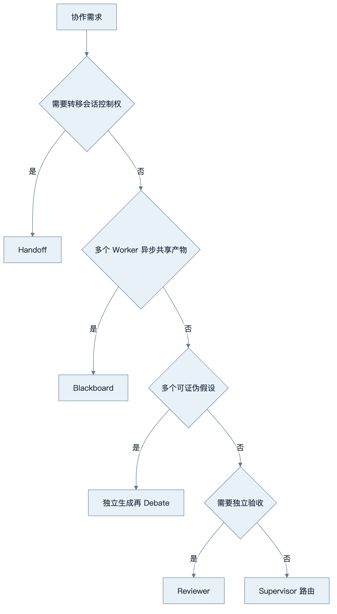
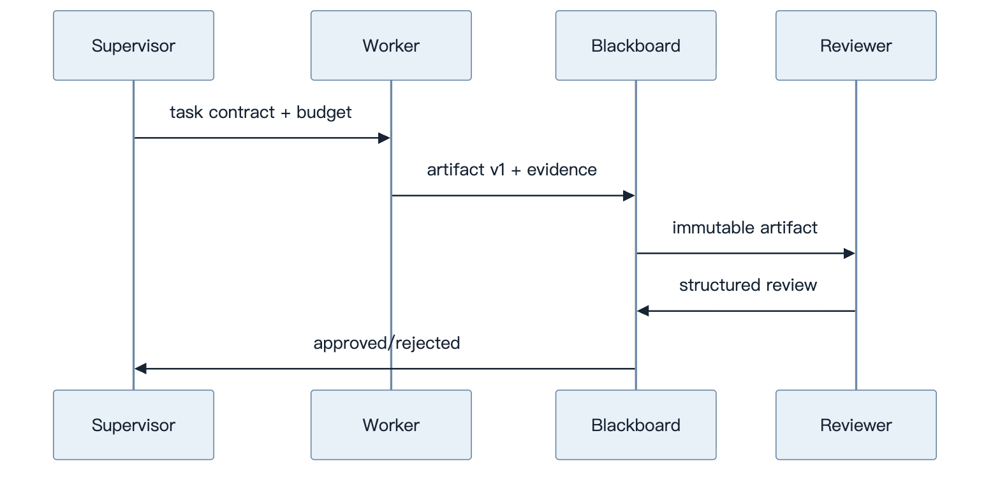
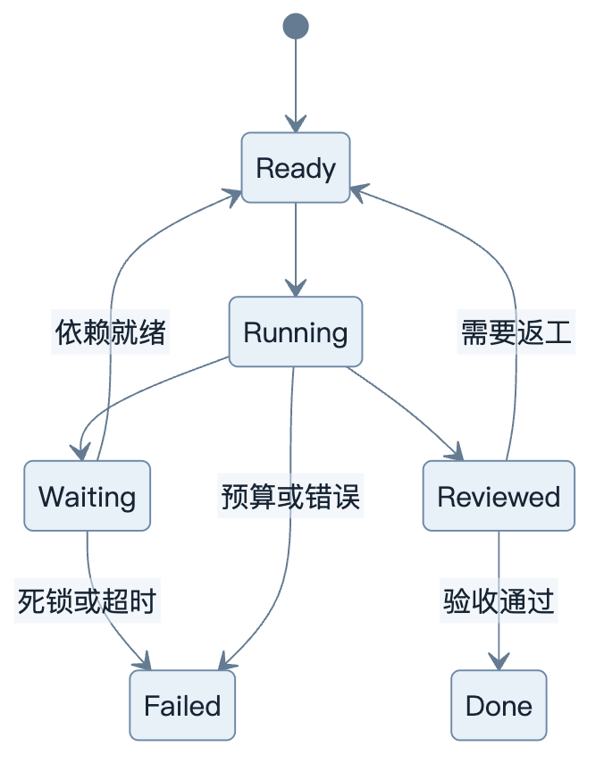
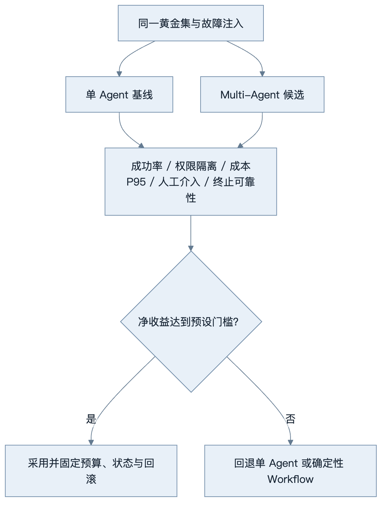

第32章：Multi-Agent 原理
最后核对日期：2026-08-07。
导读、目标与前置知识
Multi-Agent 的价值来自职责、上下文或权限隔离，而不是角色数量。本章覆盖 Handoff、Supervisor、Blackboard、Debate、Reviewer、Shared Memory、Message Passing、协调、死锁与终止。
学习目标是理解核心协调机制，并实现一个有终止条件的 Blackboard 示例。前置知识为第9—10、22章。
模式与架构
多 Agent 的价值来自职责、权限或上下文边界，而不是角色数量。主图展示 Supervisor、Worker、Blackboard 与 Reviewer 的最小协调结构。

Handoff 转移当前控制；Supervisor 统一路由；Blackboard 让角色读写共享结构化状态；Debate 只在观点多样性可验证时使用；Reviewer 根据独立 rubric 验收产物。

模式可以组合，但每增加一种通信路径都增加状态一致性和终止成本，必须由任务证据支撑。
最小与完整工程
先建立单 Agent 基线，再将检索和评审拆分。共享状态带版本与所有者，消息有 sender、recipient、task、artifact 引用和 TTL。终止器限制回合、费用、重复消息和无进展次数。
误区、调试、实践与安全
角色人格不是能力隔离；多次同模型回答不等于独立证据；自然语言共享记忆易冲突。调试消息图、等待依赖和状态版本。不同 Agent 最小权限，避免通过消息转发秘密。
总结、练习、面试与阅读
Multi-Agent 的真实价值
拆分 Agent 只有四类常见理由：上下文隔离，避免每个角色看到全部材料；权限隔离，让 Reviewer 不能写代码；能力隔离，为视觉、搜索或代码选择不同模型；并行隔离，把独立子任务分给 Worker。角色名称和“人格”本身不创造能力。若单 Agent 配多个工具达到相同成功率，应保留简单方案。
Handoff、Supervisor 与 Blackboard
Handoff 把当前任务所有权转给下一个 Agent，任务包包含目标、已验证事实、未决问题、预算和允许工具。Supervisor 保持所有权，把子任务分给 Worker 并验证 Artifact。Blackboard 是共享类型化工作区，Agent 通过版本化记录协作，而不是用无限群聊维持事实。
from pydantic import BaseModel, Field
class Artifact(BaseModel):
artifact_id: str
task_id: str
author: str
version: int = Field(ge=1)
content: str
evidence_ids: list[str]
status: str
Worker 写新版本，Reviewer 追加 review，不直接覆盖作者内容。Supervisor 依据验收将状态从 proposed 变 approved/rejected。数据库乐观锁防止并发覆盖。

Worker 与 Reviewer 不直接覆盖彼此内容。Blackboard 使用版本与乐观锁保留作者、证据和评审的完整演进。
Debate 与 Reviewer
Debate 适合存在多个合理假设且可由证据裁决的问题。各 Agent 独立生成后再互评，避免第一个答案锚定全部角色。Judge 使用 rubric 与来源，不因多数票就判真。多个实例使用同一模型和语料时错误高度相关，不能宣称独立专家共识。
Reviewer 模式更常用：Executor 产出，Reviewer 对明确标准检查，Executor 只修复驳回项。最大往返次数有限。高风险结论由人类或权威工具最终判断。
Shared Memory 与 Message Passing
共享 Memory 分事实、Artifact、任务状态与消息。事实和 Artifact 可持久，消息主要用于传递意图，不是唯一事实源。消息 Envelope 有 id、sender、recipient、task、type、payload reference、timestamp 和 correlation ID；大内容放 Artifact Store。
Agent 只订阅任务所需消息，避免广播全部 PII。消息至少一次投递时 handler 幂等；顺序依赖用 task version/sequence 检查，不能假设网络总按发送顺序。
Coordination、Deadlock 与 Termination
任务依赖形成 DAG；就绪任务才分配。Deadlock 可能来自环依赖、所有 Agent 等待审批、资源锁或互相要求对方先回答。运行时定期构造 wait-for graph，检测环和超时，转人工或失败。
终止包括验收通过、不可恢复失败、预算/时间/回合上限、用户取消和无进展。无进展可比较 Blackboard 版本、Evidence 数和重复动作。模型说“完成”只是一条候选消息。

无进展可通过 Artifact 版本、证据数量和动作去重确定性判断。模型声称“完成”只能触发评审，不能直接终止系统。
成本、调试与评估
记录每个 Agent 的 Token、工具、延迟、消息和 Artifact 贡献，计算每个成功任务成本。与单 Agent 基线比较成功率、重复调用、人工介入和尾延迟。增加角色后质量没有显著提升，就移除。
调试可视化消息图和 State timeline，查谁等待谁、哪个 Artifact 被覆盖、终止器为何未触发。回放使用 Fake Model 与固定消息，副作用工具禁用。

本书的受限 Reviewer/Executor Fixture 在 CrewAI 1.15.12、AutoGen AgentChat 0.7.5 和 Semantic Kernel 1.44.1 中都能拒绝越权工具、导出状态并在四条消息内终止，但均未胜过一条消息的单 Agent 基线。这个结果说明“框架可运行”和“拆分有价值”是两个不同命题；代码与稳定证据位于 examples/framework_comparison/multi_agent_spike/。
常见反模式与安全
反模式包括角色数量按组织架构复制、自由群聊、所有 Agent 共享管理员工具、用自然语言投票替代规则、无限 Reviewer 循环、每个角色重复读全部上下文。安全上每个 Agent 最小权限，handoff 不升级 scope，消息/Memory 按租户隔离，秘密使用引用而不是正文转发。 总结：Multi-Agent 是显式协调系统，不是角色扮演。练习：证明 Reviewer 拆分相对单 Agent 的净收益，并注入环依赖测试 deadlock。面试：如何检测死锁和无进展？Blackboard 与群聊有何不同？多个同模型 Agent 是否独立？延伸阅读：分布式系统、Actor、Blackboard、Agent orchestration 与协作评估资料。代码目录：项目9。
本章引用
以下资料用于支撑本章的核心原理、工程边界与版本敏感说明：